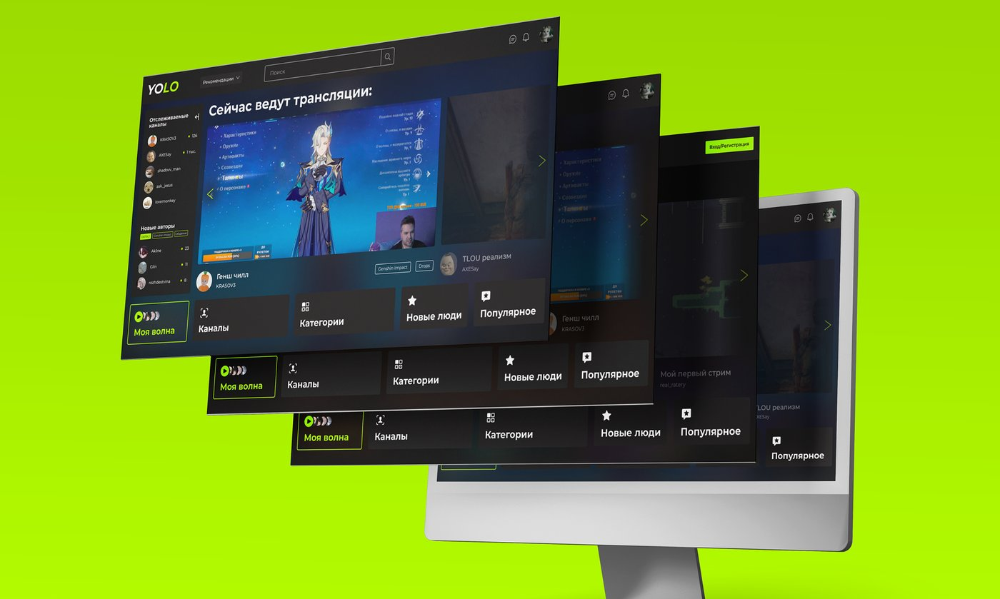
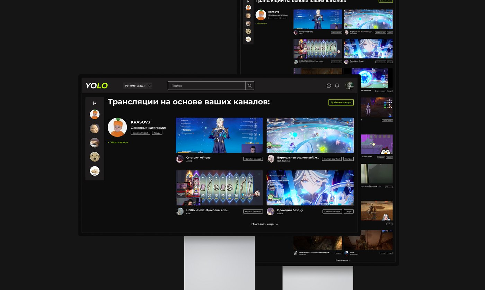
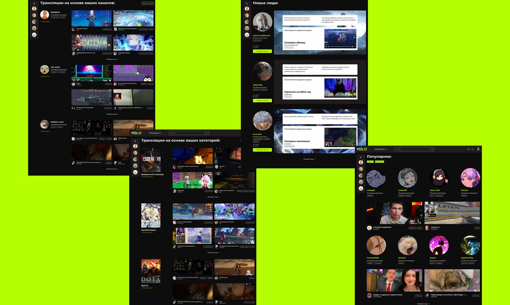
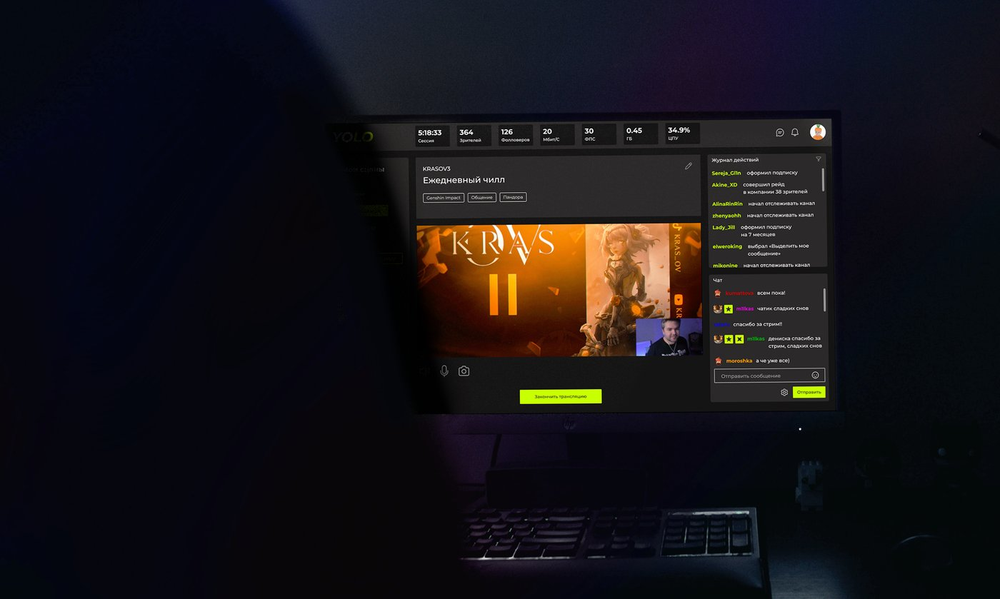
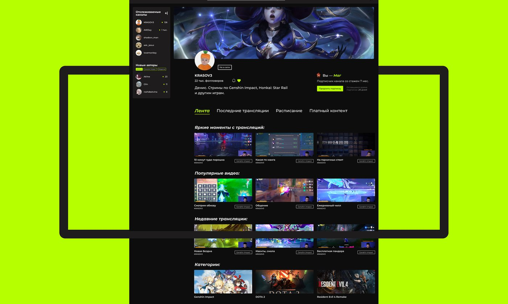
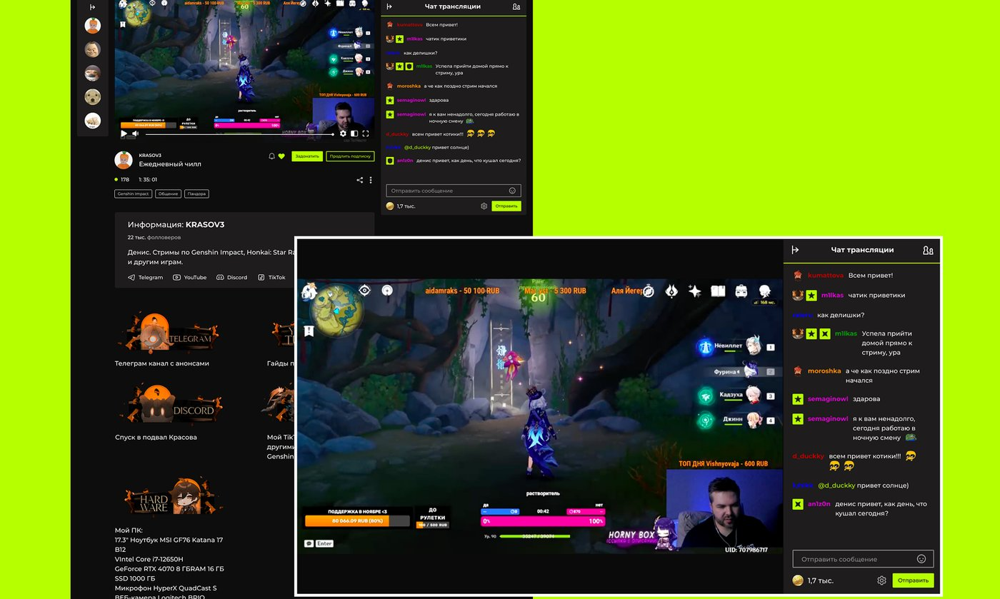

YOLO
Платформа для стримеров, которым нужна альтернатива зарубежным сервисам. От анализа конкурентов и карты аудитории — стримеров и зрителей — до структуры сайта и дизайн-системы для веб-сервиса.
Смотреть оригинальный кейс →Контекст проекта
С 2022 года Twitch перестал анонсировать русских стримеров, а с 2023 года многие пользователи в России сталкиваются с нестабильным доступом к сервису. При этом полноценной локальной альтернативы, куда стримеры могли бы перенести аудиторию и монетизацию, так и не появилось.
Задача — спроектировать свой стриминговый сервис, который снимает зависимость от одной зарубежной площадки и закрывает разные сценарии для стримеров и зрителей.
Стримерам из России стало некуда идти
С 2022 года крупнейшая стриминговая платформа стала менее доступна для русскоязычной аудитории. Часть пользователей продолжает смотреть стримы обходными путями, но это не даёт ни стабильности, ни удобства ни зрителям, ни самим стримерам.
Создать свой стриминговый сервис
Спроектировать сервис, который позволит стримерам продолжать деятельность, не теряя аудиторию и монетизацию, доступный русскоязычному пользователю и удобный для тех, кто только начинает набирать аудиторию.
Кто уже пытается решить задачу
Twitch
Родная площадка среди стримеров и зрителей — но с рисками нестабильного доступа и продвижением, не рассчитанным на российскую аудиторию.
VK Play Live
Хорошая интеграция с ВКонтакте, но невысокая посещаемость и слабый охват за пределами экосистемы VK.
YouTube
Стабильная площадка, но стримы теряются среди остального контента и не заточены под донаты и комьюнити.
Boosty
Помогает собирать донаты от аудитории, но не решает задачу самого стриминга — только монетизацию.
Мужчины и женщины 18–40 лет
Начинающие стримеры хотят стабильности и роста аудитории, но не готовы платить за продвижение. Опытные — ищут прозрачную монетизацию и инструменты для удержания комьюнити.
Мужчины и женщины 16–35 лет
Фанаты ищут любимых стримеров и готовы платить за поддержку. Казуальные зрители смотрят по настроению — для них важны доступность и простой запуск без регистрации.
От джоб-сторис к структуре сайта
- 01
Вход и подбор интересов
Изучили job-stories аудитории и её сегменты — от них отталкивались, какие разделы сайта будут действительно нужны.
- 02
Главный экран и рекомендации
Собрали афишу активных стримов с обложками и превью — чтобы выбирать было удобно, независимо от языка.
- 03
Профиль стримера и монетизация
Донаты, подписки, чат и коллаборации собрали в одном месте вместо разрозненных сторонних сервисов.
- 04
Аналитика и достижения
Прозрачный дэшборд с приростом просмотров, подписок и дохода — понятный самому стримеру, а не только аналитику.
Дизайн-система
Шрифт — Montserrat, с хорошей читаемостью и чётким сочетанием с крупными заголовками. Единый паттерн компонентов для всех модулей платформы.
Неоновый лайм на чёрном
Чёрный фон с ярко-кислотными акцентами — контрастирует со стандартной палитрой стриминговых платформ и выделяется среди конкурентов.
Как это выглядит






«Проработали весь путь стримера и зрителя — от конкурентного анализа до чёткой структуры сайта, ориентированной на реалии российского рынка.»— Команда проекта
Что получилось в результате
Проработали конкурентный анализ, карту аудитории, структуру сайта и дизайн-систему — концепт стримингового сервиса, ориентированный на российского стримера и зрителя.